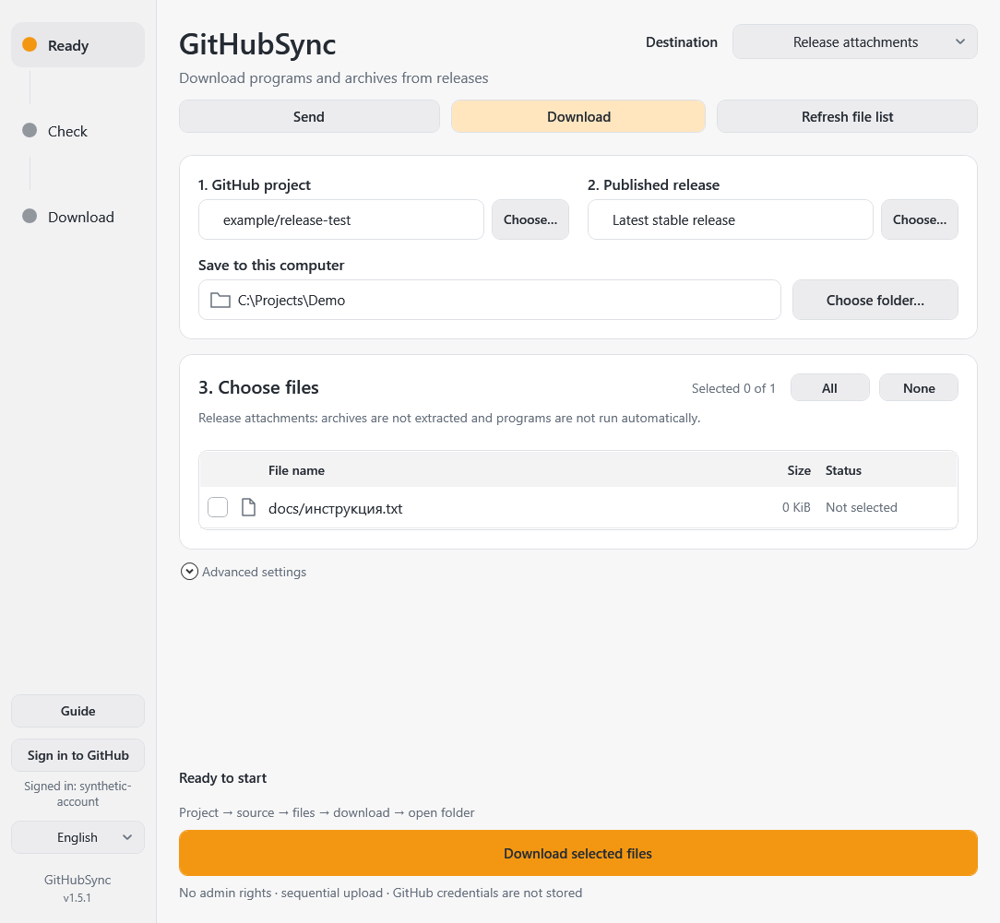
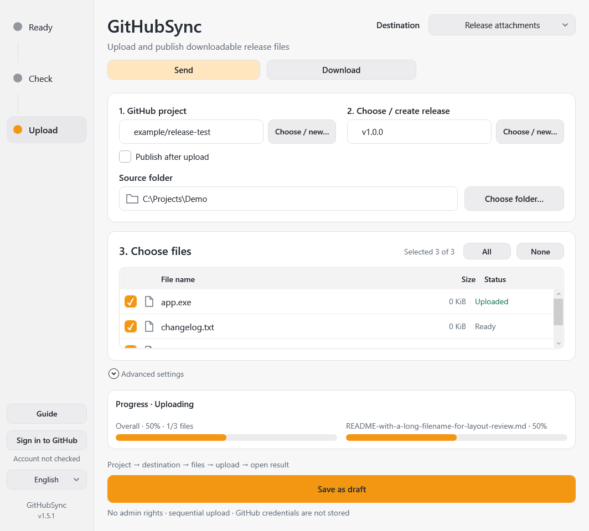
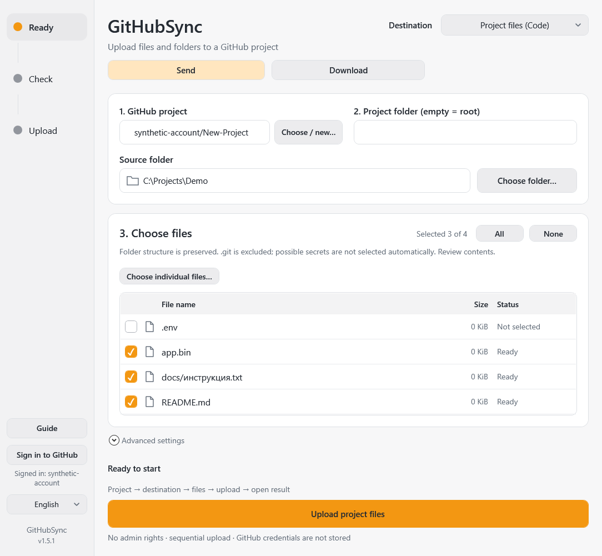

GitHubSync
Send files to GitHub or download them to your computer. Every transfer requires your approval.
Which way?
Send: from your computer to GitHub. Download: from GitHub to your computer. Then choose Project files (Code) for documents/folders or Release attachments for programs/archives. This is not automatic folder mirroring: no unattended uploads or deletions.
First download: paste a public project link → refresh list → choose local folder and files → review and approve the download. Public downloads require no sign-in.

Getting started
- Extract the complete portable folder and open
GitHubSync.exe. No separate Git installation or CMD needed. Do not run the bare EXE fromartifacts/build: it needs its companion files. - Select English if needed; first launch is German.
- For uploads and private projects, Sign in to GitHub and complete browser authentication, Google or SMS/2FA on the official site if requested. Never enter passwords or SMS codes into this app. Public downloads do not require signing in.
- Step 1: Choose / new… and select your project or paste its GitHub URL. Project means repository, not GitHub Projects.
Two destinations
Project files: source code, documents and folders appear in Code with a change history.
Release attachments: EXE, ZIP and other ready-to-use files become release attachments in Releases, not Code. To upload a folder as an attachment, make a ZIP first.
Uploading project files
- Select Project files and a project. Leave the project-folder field empty for the repository root, or enter a relative path such as
docs. - Choose folder… includes nested files. The folder contents are uploaded; its top-level folder name is not added. Alternatively choose individual files.
- Review selection. Normal files in a new folder start selected; possible credentials do not. All also excludes them. Select such files manually only after reviewing contents.
- The default branch comes from GitHub. Another existing branch can be selected in Advanced settings.
- Upload project files first shows a read-only review: Added / Updated / Unchanged, project and branch.
- Upload changes explicitly approves replacements. Close cancels. All changes form one commit; no empty commit for unchanged files. Other remote files are never deleted.
- Open project files opens the selected branch and directory.
If the branch or local files changed after review, review again. Branch protection is not bypassed; use an allowed branch or an external pull-request workflow.
Before uploading
.git and links/junctions are excluded. .env, private keys and typical credential files do not start selected. This is not a complete secret detector: review contents yourself. .gitignore is not applied automatically; deselect unwanted dependencies/build directories.
Files above 100 MiB cannot be uploaded to Code; the operation stops before writing and suggests Release attachments. Git LFS is not set up. Initialize an existing empty repository with README on GitHub first; repositories created in this app already have one.
Uploading downloadable files
- Select Release attachments and your project.
- Choose / create release: select an existing draft or create a new release with version tag and optional title. Confirm creation; this does not publish yet.
- Choose a folder and files. Only files directly in that folder are listed, not nested folders.
- Publish after upload on means Upload and publish; off means Save as draft.
- Confirm destination, file count and consequences. Cancel performs no upload.
- Publication happens only after GitHub confirms every selected attachment. Upload failures prevent publication; successfully transferred files may remain in the draft.
Legacy settings keep publication off. New settings enable it with explicit confirmation before uploading. Published releases are not edited; create a new version.
Finding and sharing results
Open draft opens the exact draft. Sign in in your browser with an authorized account and find Assets or the attachments at the bottom of the editing form. Drafts are hidden from visitors without access.
Publish release can be confirmed separately later. After restarting, select the same project/draft/files and use Check under Advanced settings: it sends nothing and restores actions for the existing draft.
Once published, use Open release, Copy link for the release page, or File links for a copy button for every attachment. A filename context menu also offers its download link.
Creating a project
Choose Create new project in the project picker. Enter a name and review the verified account and visibility. Private is default; unchecking makes the repository public. Explicitly confirm Create project on GitHub. Personal repositories only, with an initial README/commit; no file upload or release publication happens at this step. After an uncertain response, refresh the list first rather than retrying blindly.
Checks, progress and errors
Progress remains visible above actions. Code completes only when the commit is confirmed in the selected branch; release uploads complete after GitHub confirms attachments; publication after the published release is verified. Unknown duration uses an activity indicator, not invented percentages.
Check is read-only: project-change preview or draft/attachment verification. Save writes local settings; starting upload saves automatically. Confirmed attachments are skipped; name/size conflicts are not automatically deleted. GitHub-renamed files use ID/original label, or an unambiguous legacy SHA-256 match when API digest is available.
If a write response is lost, check GitHub before retrying or deleting files. Check account, access and branch protection. Error log: GitHubSync-error.log.
Portable files and compatibility
Keep EXE, runtime, docs, assets and PS1 files together. No installer/admin rights; internet required for GitHub. Tokens are not stored in app settings; Git Credential Manager manages authentication. Old config.json/ui-settings.json remain readable, with separate file selections for each mode. The app folder must be writable. Initial window: 1080×1040 logical pixels, constrained to the screen work area and resizable. This HTML guide opens offline in a normal browser.


Send or download
Choose Send for local files going to GitHub, or Download for GitHub files coming to this computer. This is not an automatic mirror: transfers require approval and unrelated files are not deleted. Public downloads need no login; private resources and uploads require the appropriate account. Complete Google/SMS/2FA in the official browser, not inside this app.
Download project files
- Choose Download and Project files (Code).
- Paste a repository URL such as
https://github.com/owner/projectin step 1. - Leave step 2 empty for the root, or enter a GitHub folder such as
docs. Advanced settings allow choosing a branch; the default is the repository's main branch. - Click Refresh file list, choose a local save folder and mark individual files. Use All to select the entire listed folder.
- Click Download selected files. Review the project, target folder and Download / Replace / Unchanged list. Explicitly approve replacements.
- Wait for verification, then click Open local folder.
Paths below the selected GitHub root are preserved. Each task is pinned to a commit, not a moving branch. Git history, submodules, links and actual Git LFS objects are not downloaded. Use release attachments for large ready-to-use archives.
Download programs and archives
- Choose Download and Release attachments, then paste the project URL.
- The latest stable published release is selected by default; Choose lets you select another published version.
- Refresh the file list, choose a local folder and select EXE, ZIP or other attachments.
- Review and confirm Download selected files. Open the local folder after success.
Archives are not extracted and executable files are not run automatically. Publishing a private project's release does not grant access to other people.
Pause and resume
Pause download saves partial files. After interruption or restart, Resume download… restores the selection. Click the main download button again to obtain a fresh review and approve replacements. A server supporting byte ranges can continue the same file. A full response restarts that file instead of appending; a changed resource requires refreshing the list.
Files are installed only after size and available hash checks. Missing GitHub digests are explicitly reported as size-only verification. Partial files are in .githubsync/partials and replacement backups in .githubsync/backups under your chosen directory. Tokens are not stored there. Do not remove partial files of an unfinished task. Uploads do not byte-resume: confirmed attachments are skipped, the unfinished attachment starts again.
System tray and updates
Closing the window hides it in the system tray while approved transfers continue. Double-click its icon to reopen. The two arrows animate in the tray and window during transfer. Use Exit in the tray menu to quit. Downloads are checkpointed; stopping uploads warns that GitHub may already contain files.
One selected source is checked every 15 minutes while the app runs. Disable monitoring in advanced settings or use Check for updates manually. Notifications never start a transfer. Refresh the file list, review changes and approve them yourself. Background checks never launch a sign-in browser; open the app and sign in explicitly. Windows autostart is not enabled.
OneDrive and write errors
Ordinary OneDrive Cloud folders are supported as sources and destinations. Actual links/junctions and unknown reparse types remain blocked. Check connection and Explorer access if a Cloud file is unavailable.
Code uploads report bytes sent and use the configured HTTP deadline, three hours by default instead of two minutes. Bytes sent do not imply a confirmed branch commit.
Errors identify the operation and HTTP status: 401 — sign in again; 403 — check permissions/SSO/rate limits; 413 — use a release attachment for a large file; 422 — check size, branch rules and workflow permissions. After a connection failure or uncertain result, check GitHub before resending. No blind mutation retries. A report needs only the operation, status and Request ID; never send tokens.